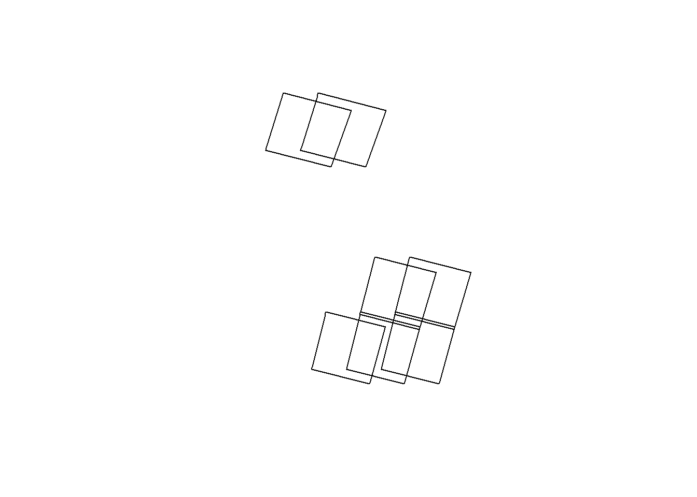

library(sf)
library(leaflet)
source("R/postgis.R")
source("R/landsat-api.R")Bulk Download Primary Sites
Setup
Load libraries and functions.
Fetch primary site locations
db <- connect_postgres()
mil_sites <- st_read(db, "military_site_clusters")
mil_sites <- mil_sites |> st_transform(4326)
raf_mob <- c("RAF Coningsby", "RAF Marham", "RAF Lossiemouth",
"RAF Waddington", "RAF Brize Norton",
"RAF Benson", "RAF Odiham")
mil_sites_f <- mil_sites |>
dplyr::filter(name %in% raf_mob) |>
dplyr::group_by(name) |>
dplyr::summarise(geometry = st_union(geometry)) |>
dplyr::mutate(area = st_area(geometry)) |>
dplyr::mutate(area = round(units::set_units(area, "km^2"),2))
DBI::dbDisconnect(db)Check which landsat images that the sites fall under
wrs2d <- st_read("data/WRS2_descending_0/WRS2_descending.shp")Reading layer `WRS2_descending' from data source
`C:\Users\lukeh\Documents\quarto\seven\data\WRS2_descending_0\WRS2_descending.shp'
using driver `ESRI Shapefile'
Simple feature collection with 28892 features and 14 fields
Geometry type: MULTIPOLYGON
Dimension: XY
Bounding box: xmin: -180 ymin: -82.6401 xmax: 180 ymax: 82.6401
Geodetic CRS: WGS 84wrs2d <- st_transform(wrs2d, 4326)
intersects <- st_intersects(mil_sites_f, wrs2d)
index <- unlist(intersects) |> unique() |> sort()
(wrs2d_f <- wrs2d[index, c("PATH", "ROW", "PR")])Simple feature collection with 7 features and 3 fields
Geometry type: MULTIPOLYGON
Dimension: XY
Bounding box: xmin: -6.32169 ymin: 50.7618 xmax: 2.79175 ymax: 58.2621
Geodetic CRS: WGS 84
PATH ROW PR geometry
3368 205 20 205020 MULTIPOLYGON (((-4.775483 5...
6968 203 24 203024 MULTIPOLYGON (((-4.2758 51....
10439 201 23 201023 MULTIPOLYGON (((-0.5901946 ...
10440 201 24 201024 MULTIPOLYGON (((-1.18568 51...
16016 206 20 206020 MULTIPOLYGON (((-6.320563 5...
23211 202 23 202023 MULTIPOLYGON (((-2.135236 5...
23212 202 24 202024 MULTIPOLYGON (((-2.730721 5...plot(wrs2d_f$geometry)
Extract the least cloudy day between Apr - June
extract_element <- function(x, n){
purrr::map_chr(stringr::str_split(x, "_"), ~.x[n])
}
api_key <- get_api_key()
scenes <- scene_search(api_key)
logout_usgs(api_key)[1] 200scenes2 <- scenes |>
dplyr::select(cloudCover, entityId,displayId,
date = temporalCoverage.startDate) |>
dplyr::mutate(date = as.Date(date)) |>
dplyr::mutate(path_row = extract_element(displayId, 3)) |>
dplyr::mutate(tier = extract_element(displayId, 7))
PR <- wrs2d_f |> dplyr::pull(PR) |> as.character()
scenes2 |>
dplyr::filter(path_row %in% PR) |>
dplyr::filter(date >= "2022-04-01") |>
dplyr::filter(date < "2022-07-01") |>
dplyr::filter(substr(displayId, 1, 4) == "LC09") |>
dplyr::filter(tier == "T1") |>
dplyr::group_by(path_row) |>
dplyr::filter(cloudCover == min(cloudCover)) |>
dplyr::pull(displayId)[1] "LC09_L2SP_202023_20220623_20220625_02_T1"
[2] "LC09_L2SP_201023_20220616_20220701_02_T1"
[3] "LC09_L2SP_201024_20220616_20220701_02_T1"
[4] "LC09_L2SP_203024_20220614_20220616_02_T1"
[5] "LC09_L2SP_206020_20220603_20220605_02_T1"
[6] "LC09_L2SP_202024_20220522_20220524_02_T1"
[7] "LC09_L2SP_205020_20220409_20220411_02_T1"Create bulk order
A bulk order was created using EarthExplorer.
The Landsat 8-9 OLI/TIRS C2 L2 dataset was selected.
DisplayId were inputted into the Landsat Product Identifier L2 field.